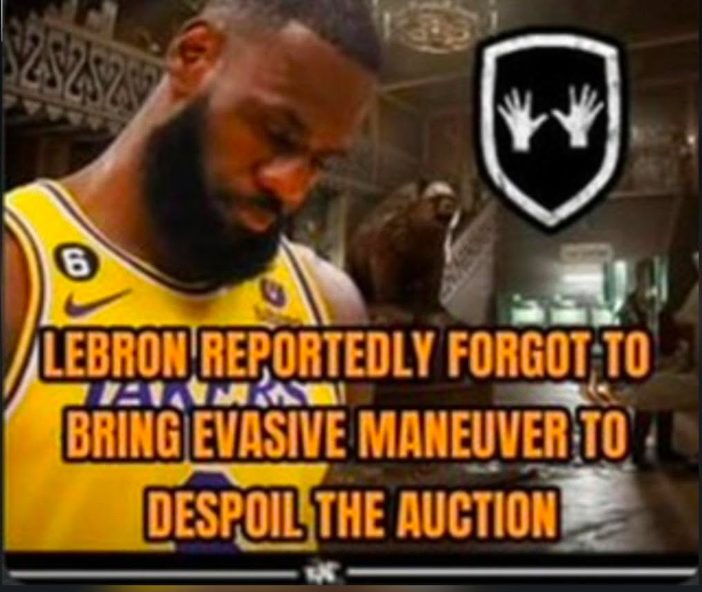
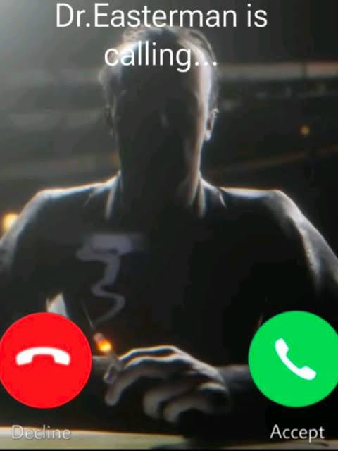
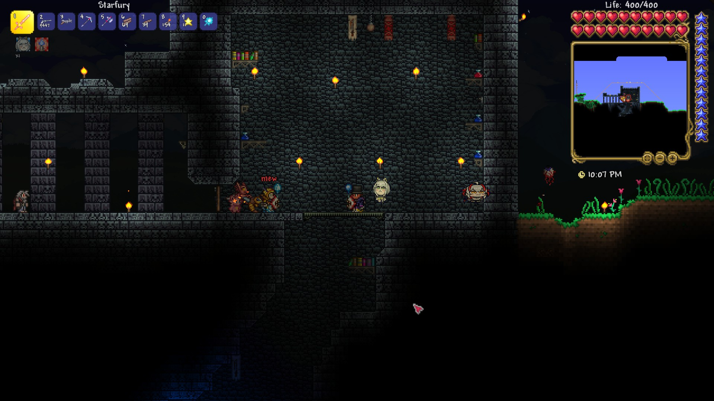

Outlast Trials
Most fun game that I have ever played even though it scared the hell out of me. Not that its scary or anything but I do not like horror period, but still fun. Can't play the game anymore because my laptop destroyed itself last time I tried running it. #amazing 9/10


Kingdom Hearts
Pretty cool story and was at a very good discount for the whole edition. Its been a while since i last played it (did not make that much progress anyways) but its still an amazing game I am not looking forward to the little mermaid because the minigames section is super buggy. Would give this a 10/10 if I continued playing it, but ill leave it as a 7/10
Terraria
I only really play this game with my friend but its super fun. I like playing ranger because using swords is meh and using FICTIONAL GUNS is nice. I am not looking forward to the wall of flesh fight 8/10 with friends but 5/10 solos.
